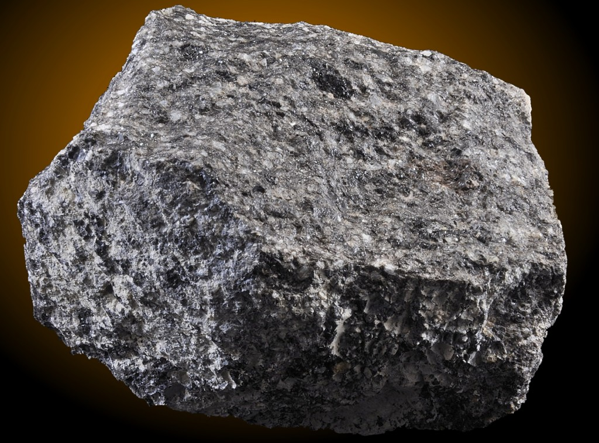

Tuff: The Consolidated Volcanic Ash Rock
Chemical Formula: Variable; composed of volcanic ash, pumice, and rock fragments, often rich in SiO₂ (Silicon Dioxide)
Color: Light to dark shades (Grey, Brown, Yellow, Green, Red)
Hardness: Varies, typically 3-6 on the Mohs scale depending on compaction and mineral composition
Crystal System: Clastic (volcanic sedimentary rock)
Localities: Italy, Iceland, United States, Japan, New Zealand, Greece
Common Uses: Building material, decorative stone, aggregate, sculptures
Tuff is a clastic volcanic sedimentary rock formed from the consolidation of volcanic ash, pumice, and other volcanic ejecta during explosive volcanic eruptions. It forms when volcanic ash is ejected into the atmosphere and then settles on the Earth's surface, where it is compressed and cemented into a solid rock over time. Tuff can include a wide range of materials, from fine ash to larger rock fragments (lapilli), depending on the nature of the eruption.
Due to its relatively soft and porous nature, tuff is often used in construction, particularly in regions with abundant volcanic activity. It has been used as a building material for millennia, from ancient Roman structures to modern homes. Tuff’s varied colors and textures, along with its ease of carving, also make it popular for decorative applications and sculptures.
Formation and Types of Tuff
Tuff forms when volcanic ash and debris settle from the atmosphere and are compressed by overlying material, resulting in a solid rock. The nature of the eruption, the composition of the magma, and the environment in which the tuff is deposited all influence its texture and composition. The particles in tuff can range from fine ash to larger fragments of pumice and other volcanic rocks.
Key Types of Tuff:
1. Welded Tuff

This variety forms when hot volcanic ash and fragments fall while still hot enough to fuse together, creating a solid, dense rock. Welded tuff is harder and more durable than other varieties and is often used as a building stone.
2. Non-Welded Tuff
Non-welded tuff forms from cooler volcanic ash that does not fuse upon deposition. It tends to be softer and more porous, making it easier to carve but less durable than welded tuff.
3. Ignimbrite
Ignimbrite is a type of tuff formed from pyroclastic flows—dense, fast-moving clouds of hot ash, gas, and volcanic debris. Ignimbrite tuff is typically welded and often has a more uniform texture.
4. Rhyolitic Tuff

Composed primarily of rhyolitic ash and pumice, this tuff is high in silica and often light-colored. Rhyolitic tuff tends to have a fine-grained texture and is commonly found in regions with felsic volcanic activity.
5. Basaltic Tuff

Basaltic tuff forms from mafic volcanic eruptions and is darker in color, typically grey or black. It contains fragments of basalt, and its composition is richer in iron and magnesium.
Structure and Properties of Tuff
Tuff’s structure is determined by the size and type of volcanic fragments it contains, as well as the degree of welding or compaction. The rock can range from fine-grained and porous to dense and hard, depending on the conditions under which it forms. Tuff is often characterized by visible layers or banding, which reflect the deposition of ash and other materials during multiple volcanic events.
- Hardness: Tuff typically has a hardness of 3 to 6 on the Mohs scale. Welded tuff is harder and more durable, while non-welded tuff tends to be softer and more easily eroded.
- Color: Tuff can vary in color from light shades of grey, white, and yellow to darker tones like brown, green, or red. The color is influenced by the composition of the volcanic ash and the presence of minerals such as iron oxide.
- Porosity: Tuff is often porous, especially non-welded varieties, which can absorb water and other fluids. This porosity can make it prone to weathering if not properly treated when used in construction.
- Mineral Composition: Tuff consists of volcanic ash, pumice, and rock fragments, which may include minerals such as quartz, feldspar, and pyroxene. It can also contain fragments of pre-existing rocks, known as lithic fragments, that were erupted from the volcano.
Uses of Tuff

Tuff has been used for thousands of years as a building material, decorative stone, and sculptural medium due to its workability and aesthetic qualities. Its relatively low density and ease of cutting make it a practical choice for a variety of applications.
1. Construction Material
Tuff is one of the earliest building materials used by humans. Its light weight and ease of quarrying made it a preferred choice for ancient civilizations, and it remains in use today for both structural and decorative purposes.
Building Blocks and Facades: Tuff blocks have been used in the construction of buildings, particularly in areas near volcanic activity. Ancient Roman architects used tuff in structures like the Colosseum and Pantheon, while modern builders in Italy, Greece, and Japan continue to use it in homes and public buildings.
Walls and Foundations: Tuff is frequently used in the construction of walls and foundations, especially in historic cities like Rome and Naples. Its ability to absorb moisture can be a drawback in some cases, but treated tuff remains durable for centuries.
2. Decorative and Architectural Stone
Tuff’s natural beauty and wide range of colors make it an excellent decorative stone. It is commonly used for exterior facades, interior walls, and other architectural details.
Tiles and Flooring: Tuff is often cut into tiles for use in both interior and exterior flooring. Its light weight makes it easy to install, and its variety of colors and textures make it a versatile option for decorative use.
Sculptures and Monuments: Tuff’s softness makes it ideal for carving, and it has been used historically for statues, monuments, and tombstones. Sculptors in ancient Mesoamerica and Europe used tuff extensively for monumental works.
3. Aggregate and Road Material
Crushed tuff is commonly used as aggregate in road construction, where it serves as a lightweight and inexpensive material for filling and paving.
Road Base: Tuff is used as a base material for roads and highways, particularly in volcanic regions. Its light weight reduces transportation costs, and its compaction properties make it ideal for road sublayers.
Concrete Aggregate: Tuff is sometimes used as an aggregate in concrete, where its low density can reduce the overall weight of the material. This is particularly useful in lightweight concrete for buildings and other structures.
Unusual Varieties of Tuff
While most tuff is composed of fine ash and pumice, certain varieties stand out due to their unique composition or the environment in which they formed. These unusual types are often prized for specific uses or for their geological significance.
1. Zeolitic Tuff
This variety of tuff contains significant amounts of zeolite minerals, which form during the alteration of volcanic ash. Zeolitic tuff is used industrially for water filtration, gas separation, and as a soil conditioner.
2. Vitric Tuff
Vitric tuff is composed primarily of volcanic glass fragments. It has a glassy texture and is often found in regions where the lava cooled rapidly. This type of tuff can sometimes form obsidian layers within the deposit.
3. Lapilli Tuff
Lapilli tuff contains larger fragments, or lapilli, which are volcanic rock fragments between 2 and 64 mm in diameter. This type of tuff forms from more explosive eruptions and is often more heterogeneous in texture.
Sourcing Locations of Tuff
Tuff is found in regions with a history of volcanic activity, particularly around the margins of tectonic plates where subduction zones create the conditions for explosive eruptions. Some of the most famous tuff deposits are located near historically active or dormant volcanoes.
- Italy: Italy has extensive tuff deposits, particularly around Rome and Naples. Ancient Roman builders quarried tuff extensively for their monuments and structures, and it remains a popular building material today.
- Iceland: The volcanic landscape of Iceland is rich in tuff, which is used in construction and as an aggregate in road building. Iceland’s tuff formations also play a significant role in geothermal energy production.
- United States: In the western United States, particularly around Yellowstone National Park and the Snake River Plain, tuff deposits are widespread. These deposits are often associated with past volcanic eruptions in the region.
- Japan: Tuff is found in Japan near volcanic regions like Mount Fuji and Kyushu. Japanese builders have historically used tuff for walls, buildings, and religious structures.
- New Zealand: The North Island of New Zealand, particularly around the Taupo Volcanic Zone, has significant tuff deposits. These are used in construction and decorative stone applications.
Exploration and Mining of Tuff
Tuff deposits are typically located in regions with a history of volcanic activity. Because tuff forms from the consolidation of volcanic ash, it is often found near ancient calderas or along the margins of tectonic plates. Mining tuff is a relatively simple process, as the rock is usually soft and easy to quarry.
Exploration
Geologists identify tuff deposits through field surveys, mapping, and analysis of volcanic layers. Since tuff forms in layers, its presence often indicates past volcanic events, making it a useful marker for understanding the history of volcanic regions.
Mining Methods
Tuff is typically quarried using open-pit mining methods. The rock is extracted in large blocks or cut into smaller pieces for use in construction or decorative projects. Due to its softness, tuff can be easily shaped and processed.
Quarrying: Tuff quarries are common in regions with significant volcanic activity. Large blocks of tuff are cut from the quarry face using saws or split by hand, depending on the size and shape needed for construction or sculptural purposes.
Processing
Once quarried, tuff is processed for various applications. In construction, it may be cut into blocks or slabs, while decorative tuff is often polished or shaped for use in tiles, countertops, or sculptures. Crushed tuff is used as aggregate in road building and concrete.
Metaphysical Properties of Tuff
Tuff is sometimes valued in metaphysical practices for its association with transformation, grounding, and protection. Its formation from volcanic ash represents powerful transformative energy, and it is believed to carry the energy of the Earth’s core.
- Transformation and Renewal: As a rock formed from volcanic eruptions, tuff is associated with transformation and renewal. It is believed to help individuals embrace change and overcome obstacles.
- Grounding and Stability: Tuff is thought to have grounding properties, helping individuals stay centered during stressful times. Its connection to the Earth’s deep processes makes it a symbol of stability and resilience.
- Protection: In some cultures, tuff is believed to provide protection from negative energy and harm. It is often used in spiritual practices for shielding and maintaining a positive environment.
Famous Finds and Tuff
Tuff has been used throughout history in famous monuments, buildings, and sculptures. Its durability, combined with its ease of use, has made it a preferred material for both ancient and modern architects.
- The Colosseum (Rome, Italy): One of the most famous buildings made of tuff is the Colosseum in Rome. Ancient Roman architects used tuff blocks extensively in the construction of this monumental structure, taking advantage of the stone’s light weight and ease of quarrying.
- Santorini (Greece): The volcanic island of Santorini is covered with layers of tuff from past eruptions. The white-washed homes and buildings perched on the cliffs are often built from local tuff, giving the island its distinctive appearance.
- Yellowstone National Park (United States): Yellowstone Caldera is surrounded by tuff deposits, which were formed during massive volcanic eruptions over 600,000 years ago. These deposits offer important geological insights into the region’s volcanic history.
Caring for Tuff
Tuff is relatively soft compared to other rocks used in construction, so it requires careful maintenance to prevent damage, especially in outdoor applications where it is exposed to the elements.
- Cleaning: Clean tuff with a mild detergent and water. Avoid using harsh chemicals or pressure washers, as these can erode the surface of the stone.
- Sealing: For outdoor applications or areas prone to moisture, tuff should be sealed to protect it from water absorption, which can weaken the stone over time. Sealing also prevents staining.
- Handling: Tuff should be handled carefully during installation to avoid chipping or breaking. For sculptures and decorative pieces, protective treatments may be applied to preserve the stone’s appearance.
Conclusion
Tuff is a unique volcanic rock that has played an important role in human history and continues to be used in modern construction and art. Its light weight, ease of carving, and wide range of colors make it a versatile material for building, decoration, and industrial use. Whether used in ancient Roman structures or modern homes, tuff’s durability and aesthetic appeal ensure its continued relevance as a building material.